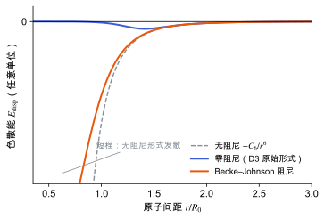

色散校正
半局域泛函缺少长程色散，D2、D3、D3(BJ) 与多体色散怎样补上，以及阻尼函数的作用。
直观阅读需要
- 范德华力的 −C6/r⁶ 形式
- PBE 泛函与广义梯度近似 等半局域泛函只看局部密度
完整推导还需要
- Kohn–Sham 密度泛函理论 与 交换关联泛函
- 分子晶体与分子间作用 中的分子间相互作用
只是提示，不需要先读完才能往下看。
直觉直观解释
色散相互作用（伦敦力）来自两个分子电子密度的关联涨落：一边瞬时出现偶极，诱导另一边产生偶极，两者相互吸引。它在长程上按 -C_6/r^{6} 衰减。
LDA、PBE 这类半局域泛函只用某点附近的密度和梯度计算交换相关能。两个分子相距较远、密度不重叠时，它们“看不到”对方，所以基本给不出这种长程吸引。对分子晶体，这意味着晶胞偏大、分子间结合偏弱、软方向偏软。
色散校正的常见做法是在 DFT 能量上另加一项原子对之间的经验吸引能，并在短程用阻尼函数把它关掉。短程关掉的原因有两个：原始的 -C_6/r^{6} 在 r \to 0 时发散；短程区域泛函本身已经部分描述了相关作用，不关掉会重复计算。

| 符号 | 是什么 | 图里对应 |
|---|---|---|
| r | 原子对之间的距离 | 横轴，以 R_0 为单位 |
| R_0 | 原子对的特征截断半径（由原子尺寸决定） | 横轴的单位 |
| C_6 | 色散系数，决定长程吸引强度 | 三条线在大 r 处重合 |
| E_{\mathrm{disp}} | 色散校正能 | 纵轴 |
| 零阻尼 | D3 原始形式的阻尼 | 蓝线 |
| BJ 阻尼 | Becke–Johnson 阻尼 | 橙线 |
图中参数只为显示形状而选，不是任何元素对的真实参数。
定义与公式数学与推导
两种阻尼
零阻尼（D3 原始形式）：
其中 R_0^{AB} 是原子对的截断半径；s_{r,n} 是缩放参数；\alpha_n 是控制阻尼陡峭程度的指数。当 r \to 0 时 f \to 0，色散能趋于零 [Grimme 2010]。
Becke–Johnson (BJ) 阻尼把分母整体换掉：
其中 a_1、a_2 是与泛函配套的参数，R_0^{AB} = \sqrt{C_8^{AB}/C_6^{AB}}。当 r \to 0 时能量趋于有限值，而不是零 [Grimme 2011]。
D3 与依赖环境的系数
D3 的 C_6^{AB} 不是固定常数，而是随原子的配位数插值：同一种元素在不同化学环境中极化率不同，色散系数也不同 [Grimme 2010]。D3 还可以加入三体项（Axilrod–Teller–Muto 形式），默认是否开启依程序而定。
由电子密度得到系数：TS 与 MBD
- TS 方法用电子密度的 Hirshfeld 划分，按原子在分子中的有效体积缩放自由原子的 C_6 [Tkatchenko & Scheffler 2009]。它仍是成对加和，但系数来自实际电子密度。
- MBD（多体色散）把每个原子看作一个偶极振子，振子之间通过偶极相互作用耦合，求解耦合系统的能量 [Tkatchenko et al. 2012]。它包含成对模型漏掉的多体屏蔽效应。
在本研究线里的样子对应与边界
- VASP：通过
IVDW选择方法，例如 D3 零阻尼、D3(BJ)、TS、MBD 等；每个编号对应哪种方法以 [VASP Wiki: IVDW] 为准。D3 类方法的参数与所选泛函配套，换泛函时必须换参数。 - β-甘氨酸的压电：PBE-D3(BJ) 是分子晶体中常用的组合。色散校正改变平衡体积和分子间的软方向曲率，因而影响弹性常数和内应变项，进而影响 d_{16}。
- 对 Z^{*} 和 \bar e 的影响是间接的：D3 这类校正只依赖原子坐标，不改变电子哈密顿量，所以对固定结构的电子响应没有直接贡献；它只通过改变结构（体积、分子取向）间接影响这些量。TS、MBD 依赖电子密度，情况不同。
- 晶体结构预测：色散对分子晶体多晶型的能量排序影响很大，排名的可信度部分取决于色散处理（见 晶体结构预测：搜索与排序）。
常见坑对应与边界
- 参数与泛函不配套：D3 的 s_8、a_1、a_2 等是对特定泛函拟合的，PBE 的参数不能套在其他泛函上。
- 零阻尼与 BJ 混用：比较文献结果时，要确认用的是哪种阻尼。
- 只校正能量不校正应力：变胞优化需要色散校正对应力的贡献，现代实现一般都有，但用自定义或外部方法时要确认。
- 把色散校正当作“精确”：它是经验或半经验修正，在不同体系上的误差大小不同；对目标性质做基准比较（见 基准与验证）。
检验自己对应与边界
参考资料
论文Grimme 2006
尚未实际查阅，目前只是拟查阅书目
论文Grimme 2010
尚未实际查阅，目前只是拟查阅书目
论文Grimme 2011
尚未实际查阅，目前只是拟查阅书目
论文Tkatchenko & Scheffler 2009
尚未实际查阅，目前只是拟查阅书目
论文Tkatchenko et al. 2012
尚未实际查阅，目前只是拟查阅书目
官方文档VASP Wiki: IVDW
尚未实际查阅，目前只是拟查阅书目
分类电子结构理论 · 方法 · 研究线：压电与响应计算、结构预测与能量景观 · 状态：草稿